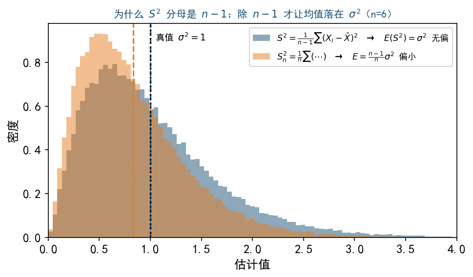
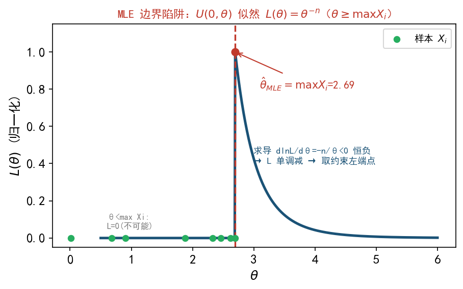

🔴 我的薄弱点（FXY 专属精析）
一句话定位：你的概率部分（Ch1-5）基本稳，主战场风险全在 数理统计 Ch6-8——抽样分布推导 + 参数估计是你 18 天里反复回头问的同一片区域。
基于 14 篇 AI 真实问答（05-11 → 05-29）+ 8 天学习回顾掌握度自动整理。系统 5/27 标"近两周第 4 次问样本统计量期望/方差"——这是最硬的持续薄弱信号。
图例：❌未掌握 · ⚠️需巩固 · 🔶部分掌握 · ✅已掌握。
🔴 头号薄弱点（优先攻）
① 样本方差 $S^2$ 期望/方差推导 + 无偏性 ❌→⚠️（反复 4 次，最强信号）
为什么弱：5/13 第一次问推导 → 5/16 再问 → 5/17 再问（系统标"第 3 次"）→ 5/27 又问（"第 4 次"）。学习回顾连续标"$S^2$ 方差推导过程与公式较为复杂"。这是压轴题 19 的核心，年年考且正中你弱项。
必背三步（限时默写，目标 5 分钟）
- 恒等变形分子：$\sum(X_i-\bar X)^2=\sum(X_i-\mu)^2-n(\bar X-\mu)^2$（加减 $\mu$ 配方，交叉项因 $\sum(X_i-\bar X)=0$ 归零）；
- 取期望：$E\!\left[\sum(X_i-\bar X)^2\right]=n\sigma^2-n\cdot\dfrac{\sigma^2}{n}=(n-1)\sigma^2$；
- 故 $E(S^2)=\dfrac{1}{n-1}(n-1)\sigma^2=\sigma^2$（这就是分母为何是 $n-1$）。
正态下 $D(S^2)$ 捷径：用 $\dfrac{(n-1)S^2}{\sigma^2}\sim\chi^2(n-1)$，其方差 $2(n-1)$，反解 $D(S^2)=\dfrac{2\sigma^4}{n-1}$（不用硬算四阶矩）。

图证"分母为何是 $n-1$"：除 $n-1$（蓝）均值正中 $\sigma^2$，除 $n$（橙）整体偏小。详见 6.1。
易错提醒：⚠️ $S^2$ 分母是 $n-1$ 不是 $n$；⚠️ 一般总体 $D(S^2)$ 带 $\mu_4$ 太复杂，考场只在正态下用 $\frac{2\sigma^4}{n-1}$；⚠️ 矩估计的 $\widehat{\sigma^2}$ 分母却是 $n$（有偏），两者别混。
针对动作：限时默写 $E(S^2)=\sigma^2$ 全过程；做压轴 20-21 / 19-20 / 22-23 各一道。
② 正态总体三大抽样分布构造（χ²/t/F）⚠️（反复 2 次）
为什么弱：5/17 问 $Y=(\frac{X_1+X_2}{X_1-X_2})^2$ 服从什么、5/20 问 t/F 选择题"为什么选 B/C"、5/22 问 $Y_1\sim t(n-1)$ 怎么凑。核心卡点是自由度怎么数 + 怎么把式子凑进定义模板。
三个模板背死
- $\chi^2(k)=$ $k$ 个独立 $N(0,1)$ 的平方和；
- $t(k)=\dfrac{N(0,1)}{\sqrt{\chi^2(k)/k}}$（分子分母独立）；
- $F(d_1,d_2)=\dfrac{\chi^2(d_1)/d_1}{\chi^2(d_2)/d_2}$（分子分母独立）。
套路：看到平方 → 凑 $\chi^2$；比值且分子分母都有平方 → 凑 $F$；正态除以含 $S$ 的根式 → 凑 $t$。
你自己悟出的秒杀技（保留）：$F$ 题数自由度 = 分子平方项数 vs 分母各组 $(n_i-1)$ 相加。如 $3S_1^2+5S_2^2\to\chi^2(3)+\chi^2(5)=\chi^2(8)$。
$F$ 两大性质（考场救命）：$\frac1X\sim F(d_2,d_1)$ → $P(F(n,n)>1)=0.5$；$F_{1-\alpha}(m,n)=\frac{1}{F_\alpha(n,m)}$（查表只给上侧，要反查）。
易错提醒：⚠️ 用 $\bar X$ 代 $\mu$ 损失 1 个自由度 → $\frac{(n-1)S^2}{\sigma^2}\sim\chi^2(n-1)$ 不是 $\chi^2(n)$；⚠️ 标准化除的是 $\sigma$（标准差）不是 $\sigma^2$；⚠️ $F$ 自由度顺序不能反；⚠️ 凑分布前必须先证分子分母独立（正态下协方差 $=0$ 即独立）。
针对动作：把 4 个抽样分布选择题（5/20 那批）默做一遍，重点练"数自由度 + 证独立"。
③ 参数估计：矩估计 + MLE（边界型）+ 无偏/有效 ⚠️（临考前最热，5/27→5/29 连问）
为什么弱：5/27 问无偏纠正、有效性比较；5/29 问双参数平移指数的矩估计 + MLE，且连续追问"MLE 没掌握""泊松忘了""次序统计量密度怎么来"——这是你最近、最未消化的一块。
必背套路
- 矩估计：总体矩 = 样本矩 → 解参数。双参数必须联立一阶矩（期望）+ 二阶矩（方差），只用一个方程是高频错误。
- MLE 常规型：写 $L$ → 取 $\ln L$ → 求导 $=0$ → 解。
- MLE 边界型（最易错）：参数在定义域（如 $x>\mu$）时绝不求导！看 $L$ 关于参数的单调性 + 约束 $\mu\le\min x_i$ → 取 $\hat\mu_L=X_{(1)}$。
- 无偏 → 有效：无偏 = $E(\hat\theta)=\theta$；有偏乘系数倒数修正；两无偏估计比有效性 = 比方差，小者更有效。

边界型 MLE 的几何真相：$L(\theta)$ 单调，最大值落在约束端点 $\max X_i$（或 $\min X_i$），求导永远取不到。完整讲解见 7.1。
次序统计量（你 5/29 专门追问）
$P(X_{(1)}>x)=[1-F(x)]^n$ → $f_{X_{(1)}}(x)=n[1-F(x)]^{n-1}f(x)$；指数总体下 $X_{(1)}$ 仍是指数，速率放大 $n$ 倍（$\lambda\to n\lambda$），故 $E(X_{(1)})=$ 原平移 $+\frac{1}{n\lambda}$。
易错提醒：⚠️ 指数两种参数写法（$\lambda$ vs $\theta=1/\lambda$）别混，$X\sim E(1/\theta)$ 时 $E(X)=\theta,D(X)=\theta^2$；⚠️ $\bar X^2$ 不是 $\lambda^2$ 的无偏估计（差 $\frac{\lambda}{n}$ 偏差，因 $E(Y^2)=[E(Y)]^2+D(Y)$）；⚠️ 估计量里不能含 $E$ 或未知参数（必须纯样本可算）。
针对动作：5/29 那道双参数平移指数（矩估计 + MLE + 无偏修正 + 有效性）是一题打通全链，自己从空白重做一遍。
④ 卡方分布性质 + 可加性 + 矩母函数 ⚠️（反复 2 次，MGF 首次接触）
为什么弱：5/16 问卡方期望/方差/可加性；5/24 又问可加性，且坦白"矩母函数我都没学啊"。
正确思路
卡方一切性质源于定义"独立 $N(0,1)$ 平方和"。$E(\chi^2(n))=n$（$E(Z^2)=1$）；$D(\chi^2(n))=2n$（$E(Z^4)=3,\ D(Z^2)=2$）。可加性两法：① 构造法（平方和直接拼）；② MGF 法 $M_{\chi^2(k)}(t)=(1-2t)^{-k/2}$，独立和 MGF 相乘 → 指数相加。
考试定位（别花过多时间）：矩母函数是进阶内容，SJTU 卷面未必直接考；卡方期望方差 / 可加性是 Ch6 工具必拿。MGF 当作"理解 $D(S^2)$ 推导"的辅助即可。
易错提醒：⚠️ 可加性必须独立；⚠️ 不是所有分布都可加（正态/卡方/泊松可加）；⚠️ MGF 注意定义域 $t<1/2$；⚠️ 大样本近似 $\chi^2(n)\approx N(n,2n)$ 别忘标准化。
针对动作：默写卡方 $E/D$ 和可加性构造法证明（MGF 法了解即可）。
⑤ 协方差/相关系数 + 多变量方差（交叉项陷阱）⚠️→🔶（5/11 集中暴露，已基本打通）
为什么弱：5/11 坦白"协方差啥的我都有点遗忘了""相关系数我完全忘记了"；追问 $D(\sum X_i)$ 为什么不等于 $n^2\sigma^2$。5/17 又问 $\rho(X_i-\bar X,X_j-\bar X)$。
正确思路
$\Cov(X,Y)=E(XY)-E(X)E(Y)$；$\rho=\dfrac{\Cov}{\sqrt{D(X)D(Y)}}\in[-1,1]$；放缩 $|\Cov|\le\sqrt{D(X)D(Y)}$。
$$\D\Big(\sum X_i\Big)=\sum \D(X_i)+2\sum_{i
独立时交叉项 $=0$ → $n\sigma^2$，不是 $n^2\sigma^2$（$n^2\sigma^2$ 是 $D(nX)$，常数提取要平方）。
易错提醒：⚠️ "$n$ 个变量相加"（方差 $n\sigma^2$，有抵消）vs "1 个变量乘 $n$"（方差 $n^2\sigma^2$，无抵消）——你 5/11 在销量题里栽过的坑；⚠️ 独立 ⇒ 不相关，反之仅二维正态成立；⚠️ $\sum(X_i-\bar X)=0$ 零和约束导致 $\rho(X_i-\bar X,X_j-\bar X)=-\frac{1}{n-1}$（负相关）。
针对动作：这块经 5/11、5/17 两轮已基本打通，确认 $D(\sum)$ vs $D(nX)$ 区别 + 默写 Cov 展开公式即可。
⚠️ 隐性盲区（AI 问答里没练过 = 必须主动补）
假设检验 / 置信区间构造：AI 问答里
几乎没有正态双检验（$\mu$ 用 t、$\sigma^2$ 用 $\chi^2$）和置信区间构造的提问记录——这恰恰是隐性风险。作战手册把"正态双检验 + 置信区间"列为
必拿 ~45 分，但你没在 AI 里练过。
t 分布区间你 5/24 顺带推过（$\mu=\bar X\pm t\cdot\frac{s}{\sqrt n}$），要主动补检验四步流程：提假设 → 选统计量 → 定拒绝域 → 下结论。
✅ 已掌握（确认巩固即可）
- CLT 应用与标准化求概率（5/14✅）
- 切比雪夫不等式估概率 + 离散收紧技巧（5/11）
- 对称分布几何法求 $E/D$（5/11）
- $E(\bar X)=\mu$，$D(\bar X)=\sigma^2/n$（5/16/17/19✅）
- 统计量判定黄金法则：只含样本、不含未知参数（$\mu,\sigma$）才是统计量（5/17✅）
- 泊松/0-1/指数分布数字特征（临考再扫一遍）
- 正态抽样分布定理三结论：①$\bar X\sim N(\mu,\sigma^2/n)$ ②$\frac{(n-1)S^2}{\sigma^2}\sim\chi^2(n-1)$ ③$\bar X\perp S^2$（5/20✅，会陈述）
- 矩估计基本流程（5/20/22✅）；协方差/相关系数定义与放缩（已补回）
- 最大值/最小值次序统计量分布推导（5/27/29 已打通）
🎯 复习优先级表
| 知识点 | 掌握度 | 考试权重 | 优先级 | 针对动作 |
|---|
| $S^2$ 期望/方差推导 + 无偏性 | ❌→⚠️(4 次) | 重点攻(压轴 19) | 🔴 最高 | 限时默写 $E(S^2)=\sigma^2$，做压轴 3 套 |
| 抽样分布 χ²/t/F 构造 | ⚠️(2 次) | 必拿(双检验基石) | 🔴 最高 | 重做 4 道选择题，练数自由度 + 证独立 |
| MLE 边界型 + 矩估计双参数 | ⚠️(最近热) | 必拿(题 18) | 🔴 高 | 重做 5/29 双参数平移指数全链 |
| 无偏性纠正 + 有效性比较 | ⚠️ | 重点攻(压轴) | 🟠 高 | 默写纠正系数 + 一道方差比较 |
| 假设检验流程 + 置信区间 | ⚠️(数据空白) | 必拿(~45 分) | 🟠 高 | 主动补：t/χ² 双检验四步 + 区间各 5 道 |
| 卡方性质 + 可加性 | ⚠️(2 次) | 必拿(Ch6 工具) | 🟠 中 | 默写卡方 $E/D$ + 可加性构造法 |
| 协方差/相关系数/多变量方差 | 🔶 | 拉档(Ch4) | 🟡 中 | 确认 $D(\sum)$ vs $D(nX)$ + Cov 展开 |
| 大数定律证明 | 🔶 | 拉档(证明题) | 🟡 中 | 过套路：同分布辛钦 / 不同分布马尔可夫 |
| 矩母函数 | ⚠️(首次) | 低频(未必直接考) | 🟢 低 | 了解 MGF 两超能力即可，别深挖 |
| CLT/切比雪夫/正态标准化 | ✅/🔶 | 必拿 | 🟢 低 | 临考扫一遍，确认标准化除 $\sigma$ 不除 $\sigma^2$ |
复习节奏（间隔重复 1/3/5/7）：概统 6/24 考，优先级前三块（$S^2$ 推导 / 抽样分布构造 / MLE）是"年年考且正中弱项"的压轴来源，6 月地基期就排进高数之外的轮转；假设检验 + 置信区间是 AI 盲区 + 必拿大分，必须主动补真题不能等。其余 ✅/🔶 临考扫一遍防遗忘即可。